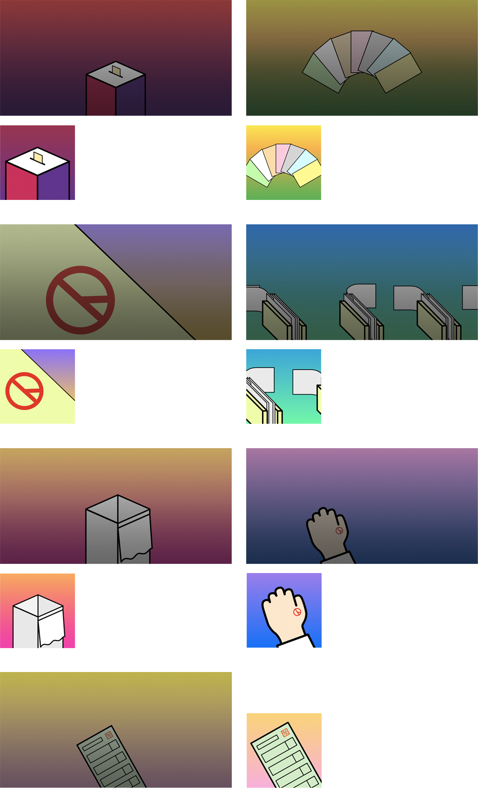

SNU Card NewsBot is an automated, personalized slide news service for the 7th local election of South Korea. Slide news (or card news) is a pervasive snack news format in South Korea because of its convenience and quick reading. Users can swipe news slides horizontally to navigate. However, generating quality slide news is challenging because it demands reasoning about another way of involving visualization, verbal messages, layout design, and storytelling at once. In addition, people have different concerns about local elections (e.g., regions, candidates, parties), manually generating each card news consumes a lot of time. Thus, my team applied robot journalism technology to automate this personalization and generation process.
In this project, my main job was to render news slides from a raw JSON format. To do this, I first designed a declarative (JSON) format grammar for data API to help every part of the team (front-end, data management, back-end, content generation) effectively communicate with each other. Then, I implemented the renderer of news slides given the declarative grammar. Another mission was to design and implement a user application to reach to general audience. In this case, I applied a card UI because higher fluidity of the elements was necessary as the end-product (a web app) contained various heterogeneous elements, such as lists of news articles and contorl panels for personalization.
Period Jan 2017 - May 2017
My Role Front-end Developer and Designer
Client SNU Institute for Communication Research
(sponsored by Naver)
Director Prof. Joonhwan Lee and Prof. Bongwon Suh
Back-end Developer Joonseok Kim, Sion Baek, and Jinho Seo
Database Management Gibeom Park and Jinhan Choi
Text Generation Sanghyuk Lee, Youjin Hwang, Seongmin Park,
Younah Ahn, and Woobin Choi
To reduce the system resources for news slide (card) generation, we decided to generate cards on browser run-time. Thus, I surveyed prior news slide designs to derive layouts for our project, eventually deriving a reusable and extendible declarative grammar that works for those various slide formats. Major types of information elements were text, image, graph visualization, comparison data, and map visualization.
A generalizable grammar was viatal to effectively operate the card rendering API. I designed the card rendering grammar through collaboration with and data management and content generation teams in terms of card layout type (e.g. map+text, vis+text, text, image, cover, and closing) and information element types (i.e. text, image, vis).
Responsive Web design should be aligned with user's journey. An important concern was to provide various elements (articles, control panels, and alert messages) in a consistent format. The card UI was effective because many of the control panels had to be foldable.
The contents of news slides were highly political, so using image was not very easy while text-only views can be boring. Thus, I created various illustrations in order to visually assist news contents.
